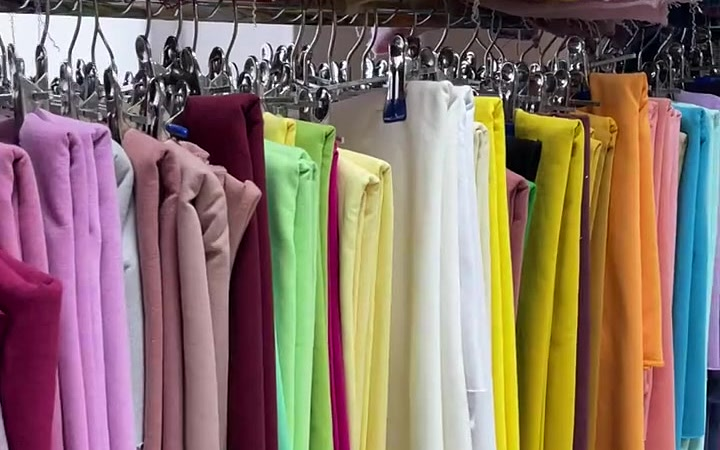
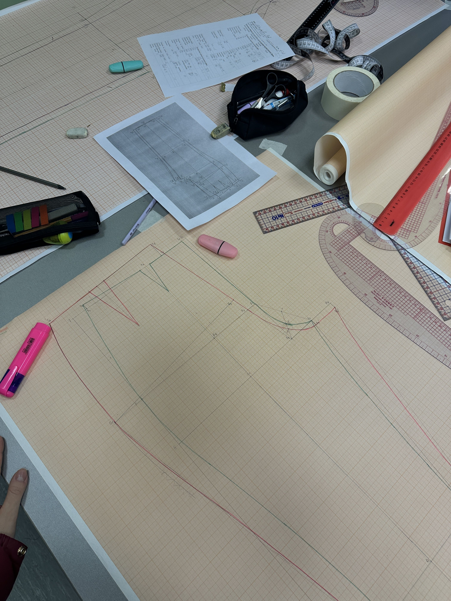

01
Design & Development
Tech pack, pattern making, 3D sampling and pre-production fit testing.
Fashion wear, sportswear, formal wear and swimwear produced end to end — pattern to packed carton — for brands in the USA, Europe and the UK.

Cut-and-sew production for the categories we know best — with the same tolerances, testing and finishing across all of them.
Everyday and seasonal apparel — tees, shirts, dresses and outerwear in woven and knit fabrics.
Performance jerseys, tracksuits and training kit with sublimation print and moisture-wicking fabrics.
Corporate uniforms, tailored shirting and workwear built to a repeatable size spec.
Swim and beachwear in chlorine-resistant stretch fabrics with bonded and flatlock finishing.
Droga Industries has manufactured custom apparel since 2001 from Chak Mandhar, Sialkot. We work directly with brands and buying houses — no middlemen, no white-label reselling.
Cutting, stitching, embroidery, printing, pressing, quality control and export cartoning all run under one roof and one QC team.
Send a tech pack or a sample. We pattern, grade, sample and confirm fit with you before a single bulk metre is cut.
ISO 9001, WRAP, GOTS, GRS, OEKO-TEX and amfori BSCI — audited by third parties, with certificates published on this site.
Each stage plays its own reel — press play and the clips run one after another on a loop.
Tech pack, pattern making, 3D sampling and pre-production fit testing.
Fabric and trim selection, shade approval and supplier verification.
Marker making, size grading and precision bulk cutting.
Screen, sublimation and DTF printing plus machine embroidery.
Hand-block, rotary and direct-to-garment printing for pattern work.
Stitching, overlocking and full garment construction on the line.
In-line checks, measurement verification and final AQL inspection.
Pressing, poly-bagging, cartoning and export dispatch.
61 clips in total — each stage loops through its own set automatically.
We match the method to the artwork, the fabric and the order size — not the other way round.
Photo-quality detail, unlimited colours, ideal for small runs.
Dense, durable colour with exact Pantone matching for bulk.
All-over, fade-resistant print bonded into polyester fabric.
Hand-block and rotary printing for artisanal, repeat patterns.
Six third-party certificates are published in full on this site. Open any one to read the certificate number and validity dates.


The reason repeat orders come back is not the first sample — it is the fifth bulk shipment matching the first one.

Send your artwork, spec sheet or a reference garment and we will come back with fabric options, a price and a production timeline.
Sampling typically starts within a week of an approved tech pack.